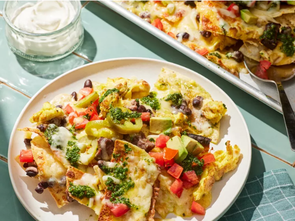

Breakfast Nachos

As summer vacation comes to a close, let's make breakfast memorable while we still have lazy mornings to kick back and relax. This play on steak and eggs features tortilla chips loaded with your favorite nacho toppings, seared flat iron steak, scrambled eggs, and an herb-packed chimichurri sauce.
Ingredients
Chimichurri
- 3/4 cup packed fresh cilantro leaves and tender stems
- 1/2 cup loosely packed fresh flat-leaf parsley leaves and tender stems
- 1 clove garlic, coarsely chopped
- 1 1/2 tablespoons red wine vinegar
- 1/4 teaspoon crushed red pepper
- 1/4 teaspoon kosher salt
- 1/4 cup extra-virgin olive oil
Nachos
- 1 (8 ounce) flat iron steak, patted dry
- 3/4 teaspoon kosher salt, divided
- 1/2 teaspoon ground black pepper, divided
- 1/2 teaspoon ground cumin (optional)
- 2 tablespoons olive oil
- 1 (11 ounce) package tortilla chips (such as Tostitos®)
- 2 (8 ounce) packages shredded Mexican cheese blend (such as Tilamook®)
- 1 (15 ounce) can black beans, drained and rinsed
- 1 cup chopped plum tomatoes
- 1 avocado, chopped
- 1/2 cup drained pickled jalapeno slices
- 1/2 cup sour cream, or as needed